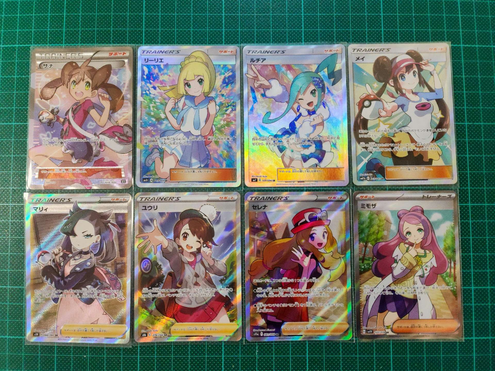

Andes Kei
B.Eng. (Fintech), Ph.D. (IERG) Student
About me
I am a Ph.D. student in Information Engineering at The Chinese University of Hong Kong (CUHK). Before that, I received my B.Eng. in Financial Technology degree from CUHK. I am interested in developing financial service technology solutions and making them practical, especially for those related to machine learning and blockchain.

Education
- Ph.D. in Information Engineering, CUHK, Aug 2022 - Present
- Supervisor: Professor Sherman S. M. Chow
- Research Interest: Applied Cryptography
- Hong Kong PhD Fellowship Scheme Awardee
- B.Eng. in Financial Technology, CUHK, Aug 2018 - Jul 2022
- First Class Honours (CGPA: 3.827/4.000, Major GPA: 3.941/4.000)
- Engineering Leadership, Innovation, Technology and Entrepreneurship (ELITE) Stream
- Triple Minor in Computer Science, Information Engineering, Web and Cloud Computing
Recent Courses
| Course Code | Course Title |
| ENGG 5301 | Information Theory |
| ENGG 5501 | Foundations of Optimization |
| IERG 6200 | Advanced Topics in Embedded AI |
| IERG 8006 | Thesis Research |
My Research
Privacy-preserving Machine Learning

Due to the recent advances in machine learning, machine learning and deep learning models have been widely adopted. However, with increasing regulation on the technology sector, the use of these models as a service raises privacy concerns. We develop efficient privacy-preserving algorithms to ensure that neither corrupted client nor server can obtain sensitive information from other parties.
Scalability Issues of Blockchain
The high latency of the underlying blockchain restricted the number of cryptocurrency transactions per second, making them difficult to replace the traditional transaction methods. We focus on the micropayment application, in which processing these transactions individually is expensive. We design off-chain protocols to support fast and scalable micropayment on cryptocurrencies.
Automated Machine Learning
The performance of machine learning algorithms is highly affected by their hyperparameters. Finding out optimal settings requires much time, and the process is error-prone. We facilitate automated machine learning in two directions: the first one is to model the hyperparameter tuning procedure as a bilevel optimization problem and solve it; the second one is to apply relaxation techniques to reduce the search space of hyperparameter tuning. We also investigate whether we can use these techniques in recent hot topics such as privacy-preserving machine learning and contrastive learning, which make machine learning more accessible to the business world.
List of Research Projects
- Privacy-preserving Machine Learning
- Hyperparameter Optimization for Privacy-preserving Machine Learning (also related to AML)
- Privacy-preserving Artificial Intelligence
- Scalability Issues of Blockchain
- Fast and Scalable Payment using Cryptocurrencies
- Compact Multi-Signatures for Smaller Blockchains
- Automated Machine Learning
- Automatic View Selection for Contrastive Learning
- Privacy-enhancing Cryptography
- Security and Privacy in Authentication
- Reinforcement Learning
- Stochastic Optimization for Reinforcement Learning
Coding Projects
PlaNET - Work Productivity App with Firebase

An Android mobile app that allows users to prioritize their work and receive notifications of upcoming deadlines. We developed this project in Java language and used Firebase to store the to-do work of users.
Project link: [Click]
Single-page Web Application with Open API
A single-page web application built with the popular MERN stack, which checks the accident and emergency waiting times of different hospitals in Hong Kong. This website uses open API to obtain the waiting time of hospitals and the Mapbox GL package to display the hospitals on a map.
Project link: [Click]
Secure E-commerce Website

An E-commerce website that supports secure checkout flow with PayPal sandbox. In addition, countermeasures against common attacks, as well as techniques related to performance and search engine optimization are implemented.
Project link: [Click]
Electronic Game with Microcontroller

An electronic game on a Cortex-M3 system, which is a quick calculation game with skills enabled. This game is to demonstrate programming and software design pattern on microcontroller.
Project link: [Click]
Software Prototype for a Single-player PC Pokemon Game

A prototype made with C# WPF for an offline, single-player Pokemon game on desktop PC, which support navigation, capture, gym battle and manage Pokemon features. This game is to demonstrate various software design patterns and principles of OOP.
Project link: [Click]
My Hobbies
-
Pokemon Console Games and TCG
I have started playing Pokemon console games and TCG since 2013. Collecting high rarity cards is satisfying (but costly).
-
Hiking
I enjoy interacting with nature through hiking. Exploring new places is always fun and rewarding!

-
Watching Anime
I have watched >50 anime TV and about 10 anime movie since 2016, and I mainly watch slice of life anime.

-
Japanese Mahjong
I have started playing japanese mahjong since 2019. It is a mahjong game that emphasize more on defense strategy.

-
Rhythm Games
I am playing several rhythm games, including Taiko, Maimai, Groove Coaster, Cytus, and Deemo.

-
Board Games
I enjoy playing a wide range of board games, especially strategy games like Power Grid.